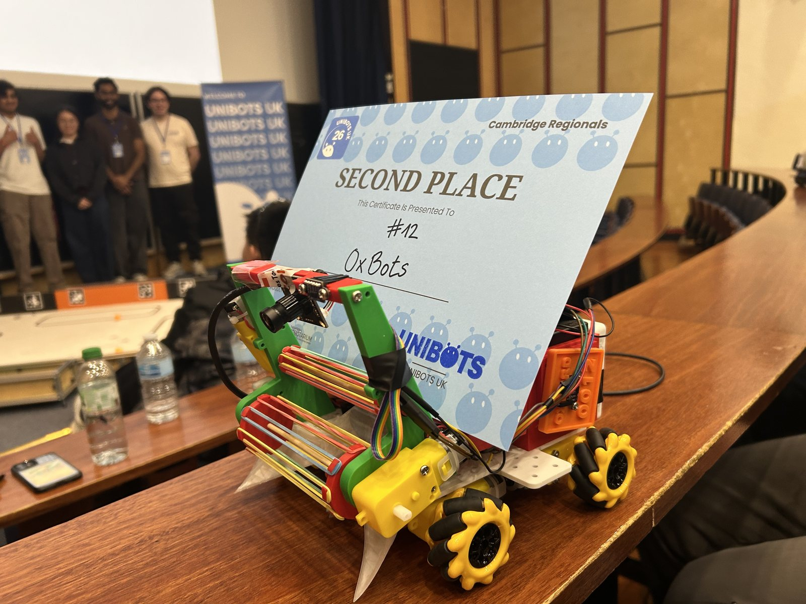
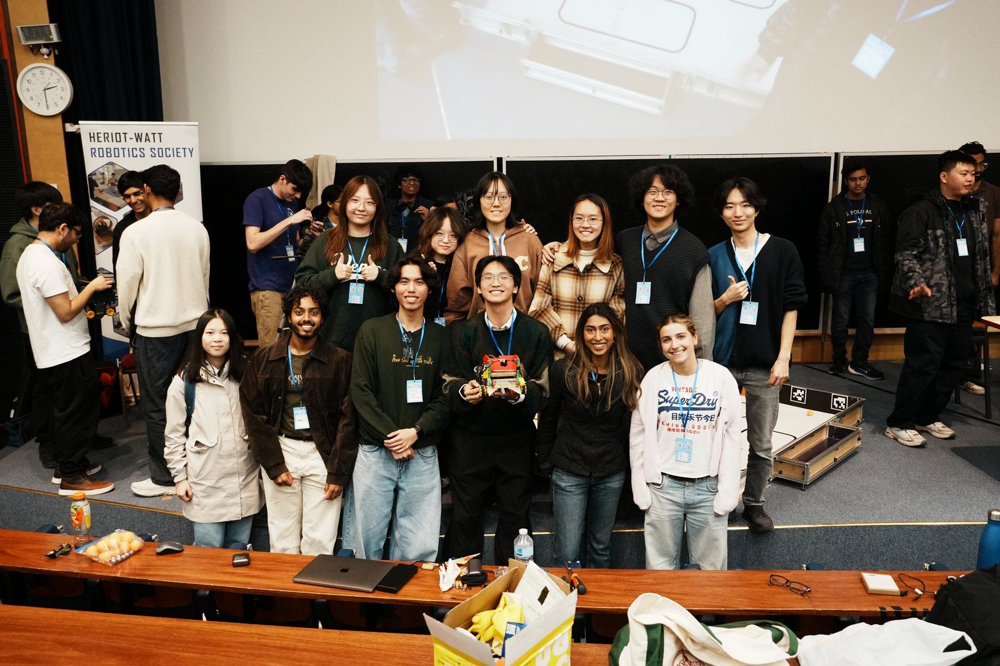

Team OxBots
A vision-guided autonomous robot for Unibots UK 2026.
Overview
Unibots UK is a national university robotics competition in which autonomous robots collect balls on an arena. I co-led Team OxBots and led its electronics, designing a compact power system and a camera and time-of-flight (ToF) sensing pipeline on an STM32 for robust, high-speed manoeuvres.
We placed 2nd of 31 teams at the Cambridge Regional and 3rd of 36 at the National Finals in London.
Presentation
Competition

